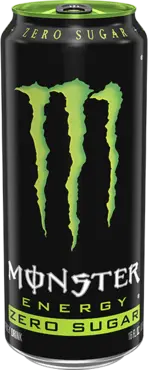
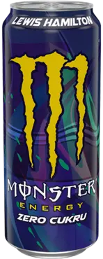
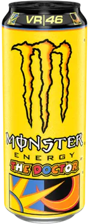
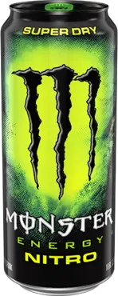

visszaKlasszikus Monster
Tépj fel egy doboz Monster Energy-t, a bolygó legkeményebb energiaitalát. Ideális kombinációja a megfelelő összetevőknek, a megfelelő arányban: a Monster gondoskodik róla, hogy elvégezd a munkát. A Monster energiaital íze intenzív, de harmonikus. Sportolók, zenészek, anarchisták, diákok, utcai harcosok, metálosok, geekek, hipszterek és bringások imádják - te is imádni fogod!

visszaZéró Klasszikus Monster
Az emberek évek óta bombáznak minket emailekkel, hogy legyen Végre egy Monster zéró cukorral. Hát most megvan, haver! Összerakni egy italt zéró cukorral ami kiérdemli a Monster karmolást egyáltalán nem volt egyszerű Aztán egy új keverékkel, új édesítőszerekkel, több száz kudarcra ítélt izvariáció után Végre abszolút eltaláltuk. Monster Zero Sugar B vitaminnal és koffeinnel segít, hogy jobban man munka (mármint a bulizás) Szóv hogy összességében rohadt jól érezd magad
visszaLewis Hamilton Monster
MINDEN NAP ARRA TÖREKSZÜNK, HOGY LEGJOBB TELJESÍTMÉNYÜNKET NYÚJTSUK, DE EHHEZ A MEGFELELŐ ÜZEMANYAGRA VAN SZÜKSÉGÜNK. ENNEK FONTOSSÁGÁT AKKOR IS ÉRZEM, AMIKOR A BAJNOKI SZEZONRA KÉSZÜLÖK. EZT A KÜLDETÉST SZEMELÖTT TARTVA DOLGOZTUK KI A MONSTERREL EGYÜTT AZ ÚJ LIMITÁLT ÍZT. CSONTHÉJAS GYÜMÖLCSÖK FRISSÍTŐ ÍZÉVEL ÁTITATOTT ENERGIAITAL TELE VEGÁN ÖSSZETEVÖVEL AMI FELTURBÓZ A KÖVETKEZŐ MENETRE MAD DOG JONES-SZAL KÖZÖSEN MEGÁLMODOTT DESIGN-BA CSOMAGOLTUK A FINOM FORMULÁT, AMELY SEGÍTSÉGÉVEL TE IS BÁRMIRE KÉPES LESZEL
visszaThe Doctor Monster
Valentino Rossi, a MotoGP bajnoka 100 futamgyőzelemmel és 9 világbajnoki címmel nyűgözte le rajongóit világszerte. A legpörgősebb Monster megalkotásában Valentino alias "The Doctor®"t volt a partnerünk. A könnyed frissítő citrusos iz és a legendás Monster Energy keveréke téged is beindít!
vissza Nitro Monster
A Monster Energy Nitro Super Dry a Monster klasszikus energiakeverékét tartalmazza, amely megadja a szükséges lökést. A különlegességét a klasszikushoz képest a Super Dry dinitrogén-oxiddal átitatott sima, citrusos íze hozza létre, könnyű és száraz textúrájával, amely hasonlít a finom pezsgőhöz, amely jobban átélhető, mint elmagyarázható. Engedd szabadjára a Nitro Beast-et!
